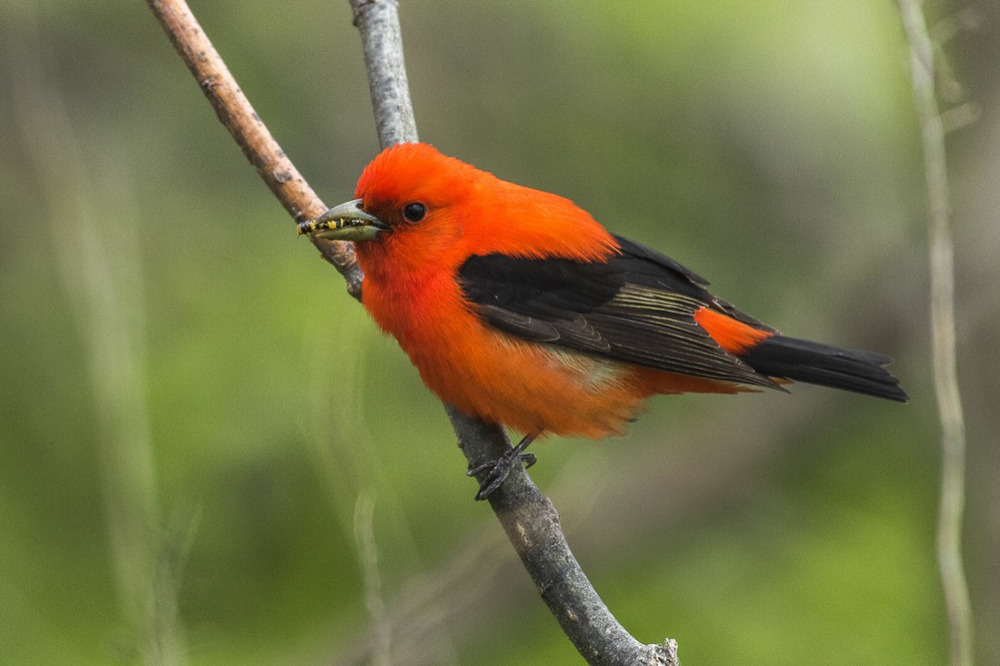
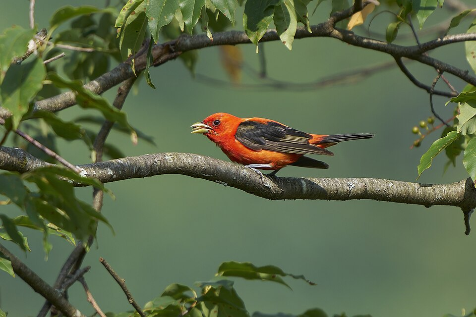

Scarlet Tanager
Piranga olivacea


Listen
Song: a 25-second clip, cut from a 78-second recording (trimmed, with a short fade-out, and saved as a small MP3), so it plays without an internet connection. Recording by G. McGrane, Public domain, on Wikimedia Commons, where the whole recording is (an internet connection is needed to open it).
- Kind
- bird
- Native to Vermont
- yes
- Legal status
- State rank S5B (the Atlas page lists no SGCN or other label). Federal law: the Migratory Bird Treaty Act (see Legal status). (checked 2026-10-31)
- Look-alikes
- Crossbills (named by Audubon only as another bird with red and black wings)
Names
Scarlet Tanager, Piranga olivacea.
Range and habitat
The Atlas profile says it nests high in the canopy of large, mature deciduous forest interiors. Scarlet Tanagers winter in South America as far south as Bolivia. When birds return to New England in late spring, harsh weather can leave them short of insects; the Atlas says cold snaps and unseasonable spring weather have caused die-offs in Vermont and the Northeast. Audubon lists mostly deciduous forest, especially oaks, and also maple, beech and mixed pine-oak woods.
How to identify (by season; look-alikes and the key difference)
- Size: about 7.5 inches long (19 cm) (Audubon).
- Breeding male: brilliant red with black wings and tail, the only brilliant red bird with black wings and tail. The Atlas notes a rare bright orange male.
- Female: dull yellow-green with darker wings and a thick bill. The nonbreeding male is greenish with black wings after a late-summer molt.
- Voice: a hurried, burry, repetitive warble somewhat like a robin's; the call is an emphatic, nasal "chip-bang".
Through the year
Dates are typical for Vermont and shift with elevation and year; "approximate" means the source gave a season and the dates are a translation of it.
| When | What | Look for | What to do | Dates |
|---|---|---|---|---|
| May 24 to Aug 18 | nesting (watch) | Nests high in the canopy, so females and nests are hard to find, but the male's loud song and calls often give the bird away. Vermont records: nest building 24 May to 14 July, one nest with eggs on 13 June, nestlings on 20 and 24 June, fledglings 21 June to 18 August. | stated |
Role and management
Audubon lists mostly insects such as caterpillars, beetles and bees, plus some wild berries. The Atlas profile's management line is to maintain large tracts of mature forest.
What helps it thrive (light, soil, shelter, food and the trees it uses)
Forest songbirds in general (the Guide, chapter 6). Keeping forest intact is possibly the most important thing: large patches not cut up by roads, buildings or big openings hold more forest birds and produce more young, and an opening changes the forest for more than 200 meters from its edge (more nest predators and cowbirds in small or fragmented patches of under 30 acres). Keep a variety of habitats (hardwood, softwood, wetland, floodplain) and stream and wetland buffers; keep some old forest (over 100 years) with cavity trees and dead wood, and where a mostly forested landscape has under 5 percent young forest consider 1- to 5-acre patches of young forest. Different species use different layers: ovenbirds nest on the leaf litter, black-throated blue warblers in a dense understory of hobblebush.
- This species: the Atlas's management line is to maintain large tracts of mature forest; it eats mostly caterpillars, beetles and bees and some wild berries (Audubon).
Legal status
Native birds are covered by the federal Migratory Bird Treaty Act, which prohibits taking (killing, capturing, selling, trading and transport are named) protected migratory birds without prior authorization (U.S. The Act applies to native species named in the treaties (50 CFR 10.13). Ask the county forester or the Fish and Wildlife Service before work near an active nest.
Sources
- Vermont Center for Ecostudies, Vermont Breeding Bird Atlas, Scarlet Tanager species profile: http://val.vtecostudies.org/projects/vermont-breeding-bird-atlas/scarlet-tanager/
- Vermont Center for Ecostudies, The Second Vermont Breeding Bird Atlas (2003-2007), Scarlet Tanager species account: https://media.vtecostudies.org/wp-content/uploads/2026/08/03141635/Scarlet_Tanager_vbba2.pdf
- National Audubon Society, Guide to North American Birds, Scarlet Tanager: https://www.audubon.org/field-guide/bird/scarlet-tanager
- U.S. Fish and Wildlife Service, Migratory Bird Treaty Act of 1918: https://www.fws.gov/law/migratory-bird-treaty-act-1918
- Vermont Fish & Wildlife Department, A Landowner's Guide, Wildlife Habitat Management for Lands in Vermont, chapter 6 (Forest Songbirds): https://vtfishandwildlife.com/sites/fishandwildlife/files/documents/Learn%20More/LandownersGuide/Landowner-Guide-Complete.pdf
Vermont Woodland Owner's Reference, built 2026-11-11. Rules and dates here are summaries, not legal advice; dates shift with elevation and year. Photo and recording credits · The text is by Loop Works, CC BY 4.0 (pictures and recordings keep their own licenses)